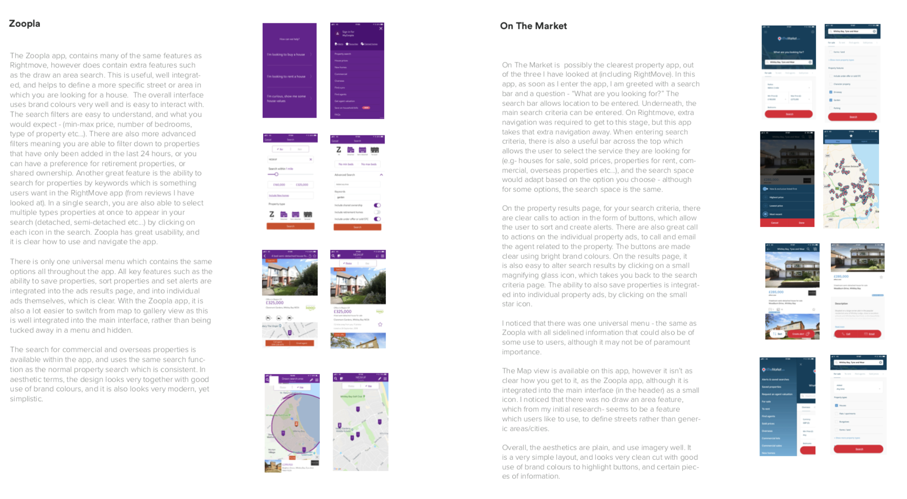

Rebecca Wood
Heartwood Hospital website
Web design, wordpress, branding
January-april 20198
The Brief
What were the main aims?
My task was to design a new web-based e-learning resource that helps patients at the “Heartwood Hospital” understand the heart or lung transplant process, using WordPress and other relevant social media/marketing. I needed to focus on either the topic of heart or lung transplants. For my work, I chose the topic of heart transplants. You can see my process, as well as the final results below.
Deliverables
An information architecture document, detailing the structure of the site and other background work.
A live, working Wordpress website for 'Heartwood Hospital.' A selection of key pages showcasing your design concept.
Tools used
Wordpress
Adobe InDesign
Adobe Draw (using my i-pad to draw illustrations)
Adobe illustrator
Research
The first thing I did in this project, was to carry out some initial research, which included carrying out some contextual research, and carrying out an analysis of the existing website.
Context is key
I started my research by looking into heart transplants, and what happens during the procedure. I wouldn't be able to create a good informative website without doing so.

Existing website analysis
I then went onto look at the existing website for the Institute of Transplantation, to see what is currently in place, and what could be improved upon.
Pre and post operation information booklets
To help with the project, we were provided with booklets which included information about what happens before and after the operation. These booklets were extremly helpful in building a strong base of content for my website. I went through each booklet, and highlighted the main points that would act as content for my website.

Competitor research
I then took a look at some direct competitor websites, including Cancer Research UK, and the British Heart Foundation. I analysed their websites in terms of appearancea and styling, navigation and usability, as well s content and structuring. You can all of my competitor research within my informatiino architecutre document. I also carried out market research of e-learning webstes, and general health websites such as the NHS - which can be seen in my document.
What I learnt from research
I learnt a lot from the research phase n this project. It has enabled me to understand the issue of heart transplant, and to gain more context into what happens during the procedure. The research also gave me lots of content to work with, through the use of the booklets. It was also good to see what oter websites that were similar (e.g- cancer research), were doing and how their current informational website is designed, as well as the information it contains.

User Research
After conducting some initial research, I moved onto conducting some user research. This included secondary research, and the creation of personas.
Chance To Live documentary
As part of my research, I had a look at a documentary called ‘A Chance to Live.’ The documentary follows the lives of patients, and their wait for a heart transplant. I strongly believed that a big part of this project was empathy for patients, and really understanding what they go through both physically and emotionally. So, when watching the documentary I picked out key quotes, and summarised moods and feelings of various personas within the film – to help me really understand how they were feeling at various points in their journey.
User stories
I decided to create some user stories based on my research so far. I created these to illustrate the content that could be included within the e-learning website. You can see the user stories below.
Interviews
In class, I was given interviews (sound files) carried out by tutors, and researchers at the university, as this project was part of a wider project to create an e-learning resource for the freeman Hospital in Newcastle. People who were interviewed included: social workers, outpatients and current patients undergoing heart transplants at the Freeman Hospital. I listened to all of the interviews, and made notes picking out the most important points needed for me to cerate a successful design.
I also made sure to take any information from the interviews about the current pre and post-operation booklets that patients are given before and after their operation. I noted down what is wrong with the current pack, and how it could be improved – just so I had clarity when moving forward.
Scenario of use
After gaining a good amount of content for my website, I thought it would be a good idea to think about a potential scenario of use. I carefully put together a storyboard to illustrate how the website could be used. This also helped me to define which parts of the website I was going to create on WordPress, to showcase the design concept.
Personas
Personas are a good way to understand my audience, and to identify further content, so I created three detailed personas to illustrate the family scenario above and the features of the website that they would use.
Organising the website content
After gathering all of the content, and carrying out lots of user research, I needed to organise the content into a logical order. Although I wasn’t going to create all of the screens for the website – only a selection, I wanted to show how the whole website would be ideally organised. I used Gloomaps to create an extensive navigation map.
Design Development
After gathering all of my content from my research, and structuring it, it was time to begin designing the screens, and creating a brand.
Branding
A relatively important part of the website was branding for the “Heartwood Hospital.” This will really help to tie the website together with one brand and style.
Wireframe sketches
I drew out some wireframes for the pages I wanted to create, and these were only
Final results
You can see below all of the final screens that I created on WordPress. To see how I built the site on WordPress, you can see my information architecture document. To see a couple of pages that aren’t shown above, including the patient portal area – see the live website at – www.heartwood.rebeccawooddesign.co.uk
Reflection
Upon completing the project, I had a think about what I learnt from it, and what I would have improved if I were to complete it again.
What did I learn?
This project was the first time that I have really experimented, and used WordPress to build a website, and I learnt a lot using the inspector in Google Chrome, to identify CSS classes, and apply my own custom CSS to the theme to customise it. I also applied my own HTML to create custom elements, such as a login form – which helped develop my skills in this area too. I also learnt more about WordPress itself, and how to create child themes and install themes which is useful for any future websites I create using WordPress.
What would I have improved?
If I had more time on the project, or if I were to do the project again, I think I would create my own videos in the style shown on my website currently (but with my content instead of some found footage). This would have given the website and it’s content fit better, and seem a little bit more legible. I think I would have also tried to improve the responsiveness of the website. Although I did make the majority of pages responsive (including the header and footer) – on some pages, content had some unnecessary padding, that I wasn’t sure how to get rid of. I maybe would have also created a few more pages on WordPress, just to showcase more of the design concept. Overall, I was happy with the outcome and the way the site turned out!